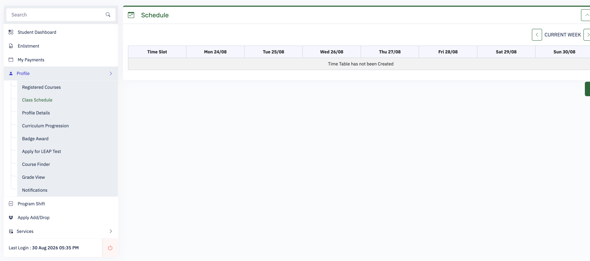

Your EAF already knows when class starts.
Archershub already has your enrollment data: subjects, meeting days, times, sections, and rooms.
AnimoSort reads the same information and draws the week it was supposed to be.
Archershub outputbefore

Time Table has not been Created
If it had been populatedreceived order
DATA103
ECOF223
ECOF366
FINIVBA
FINSPTO
GESTSOC
LCASEAN
The room was there. The chronology wasn't.
This is what the Schedule page shows in the supplied example: timetable-sized space, with “Time Table has not been Created” where the week should be.
same EAFread · normalize · sort
AnimoSort outputafter
Actual output generated by AnimoSort's export pipelineClick the timetable to expand · 7 courses · 14 meetings
AnimoSortThe same enrollment data, finally arranged as a week.
Same official EAFNo new schedule data was invented.
Actual start times7:30 AM through 6:00 PM appear in order.
Local by designNo account, server upload, or AI reading your EAF.